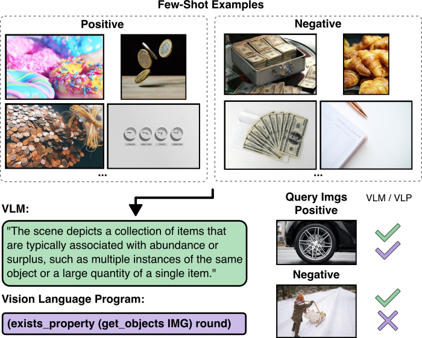

Vision-Language Programs pair VLM perception with symbolic program synthesis to produce executable, interpretable rules for few-shot visual reasoning.
Vision-Language models achieve strong performance on multimodal tasks but often fail at systematic visual reasoning. We propose Vision-Language Programs (VLP), which combine the perceptual flexibility of VLMs with the structured reasoning of program synthesis. VLP asks a VLM to produce type-constrained visual descriptors, compiles them into executable programs, and searches for the most accurate, highest-likelihood rule under a probabilistic grammar. The resulting programs execute on images, remain consistent with task constraints, and provide human-interpretable explanations that enable shortcut mitigation. Experiments on synthetic and real-world datasets demonstrate that VLPs outperform direct and structured prompting, especially on tasks requiring complex logical reasoning.
The animation below shows the full VLP pipeline on a birthday recognition task. First, a VLM is prompted with the task images to identify relevant symbols in the image (here objects, properties, and actions). These are compiled into a typed DSL, and then a search over programs to find the best rule is performed.
On Bongard-RWR, direct VLM prompting hallucinated an “abundance” rule. VLP grounded objects, inferred the property round, and synthesized a concise executable program that correctly classifies all queries.

@article{wuest2026vlp,
title={Synthesizing Visual Concepts as Vision-Language Programs},
author={W{\"u}st, Antonia and Stammer, Wolfgang and Shindo, Hikaru and Dhami, Devendra Singh and Helff, Lukas and Kersting, Kristian},
booktitle = {IEEE/CVF Conference on Computer Vision and Pattern Recognition},
year = {2026}
}